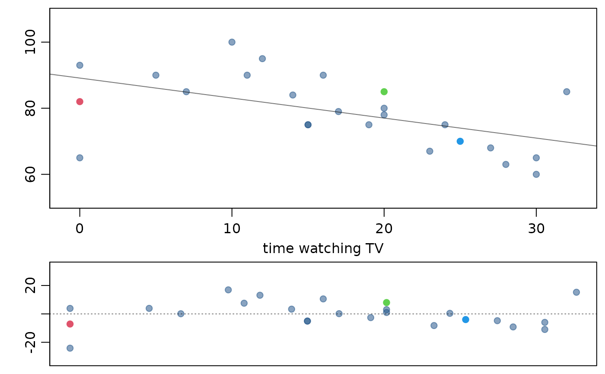

Plot data, the linear model, and a residual plot simultaneously.
Usage
lmPlot(
x,
y,
xAxis = 0,
yAxis = 4,
resAxis = 3,
resSymm = TRUE,
wBox = TRUE,
wLine = TRUE,
lCol = "#00000088",
lty = 1,
lwd = 1,
xlab = "",
ylab = "",
marRes = NULL,
col = "#22558888",
pch = 20,
cex = 1.5,
xR = 0.02,
yR = 0.1,
xlim = NULL,
ylim = NULL,
subset = NULL,
parCustom = FALSE,
myHeight = c(1, 0.45),
plots = c("both", "mainOnly", "resOnly"),
highlight = NULL,
hlCol = NULL,
hlCex = 1.5,
hlPch = 20,
na.rm = TRUE,
...
)Arguments
- x
The x coordinates of points in the plot.
- y
The y coordinates of points in the plot.
- xAxis
The maximum number of x axis labels.
- yAxis
The maximum number of y axis labels.
- resAxis
The maximum number of y axis labels in the residual plot.
- resSymm
Boolean determining whether the range of the residual plot should be symmetric about zero.
- wBox
Boolean determining whether a box should be added around each plot.
- wLine
Boolean determining whether to add a regression line to the plot.
- lCol
The color of the regression line to be added.
- lty
The line type of the regression line to be added.
- lwd
The line width of the regression line to be added.
- xlab
A label for the x axis.
- ylab
A label for the y axis
- marRes
Margin specified for the residuals.
- col
Color of points.
- pch
Plotting character.
- cex
Plotting character size.
- xR
Scaling the limits of the x axis. Ignored if
xlimspecified.- yR
Scaling the limits of the y axis. Ignored if
ylimspecified.- xlim
Limits for the x axis.
- ylim
Limits for the y axis.
- subset
A subset of the data to be used for the linear model.
- parCustom
If
TRUE, then the plotting margins are not modified automatically. This value should also beTRUEif the plots are being placed within a plot of multiple panels.- myHeight
A numerical vector of length 2 representing the ratio of the primary plot to the residual plot, in height.
- plots
Not currently utilized.
- highlight
Numerical vector specifying particular points to highlight.
- hlCol
Color of highlighted points.
- hlCex
Size of highlighted points.
- hlPch
Plotting characters of highlighted points.
- na.rm
Remove cases with
NAvalues.- ...
Additional arguments to
plot.
Examples
lmPlot(satgpa$sat_sum, satgpa$fy_gpa)
lmPlot(gradestv$tv, gradestv$grades,
xAxis = 4,
xlab = "time watching TV", yR = 0.2, highlight = c(1, 15, 20)
)
